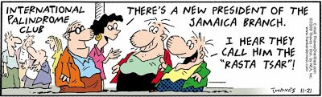

Checking Palindromes
A palindrome is a string that reads identically backward and forward, such as "level" or "noon". Although it is easy to check whether a string is a palindrome by iterating through its characters, palindromes can also be defined recursively.

Any palindrome longer than a single character must contain a shorter palindrome in its interior. For example, the string "level" consists of the palindrome "eve" with an "l" at each end. Thus, to check whether a string is a palindrome—assuming the string is sufficiently long that it does not constitute a simple case—all you need to do is
- Check to see that the first and last characters are the same.
- Check to see whether the substring generated by removing the first and last characters is itself a palindrome.
If both apply, then the string is a palindrome. So, what are the simple or base-cases? A single-character string is a palindrome because reversing a one-character string has no effect. The one-character string therefore represents a simple case, but it is not the only one. The empty string—which contains no characters at all—is also a palindrome.
Here is a recursive function which returns true when given a palindrome.
bool isPalindrome(const string& str)
{
if (str.size() < 2) { return true; } // base case
return str.front() == str.back() &&
isPalindrome(str.substr(1, str.size() - 2));
}If the length of the string is less than 2, it is a palindrome. If not, the function first checks to see that the first and last characters are the same, and, if they are, it calls itself again with a shorter substring, removing the first and last charcters from str.
 This course content is offered under a
CC
Attribution Non-Commercial license. Content in this course
can be considered under this license unless otherwise noted.
This course content is offered under a
CC
Attribution Non-Commercial license. Content in this course
can be considered under this license unless otherwise noted.